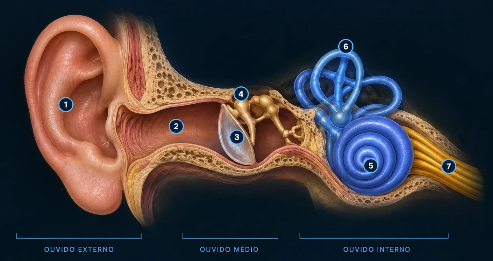

Labirintite
Inflamação que pode afetar o ouvido interno e estar associada a tontura e alterações de equilíbrio.
LABORATÓRIO VIRTUAL • SISTEMA AUDITIVO
Explore cada estrutura, acompanhe a viagem do som e faça um teste auditivo educativo usando sons gerados pelo próprio navegador.
01 • ANATOMIA
Clique nas estruturas do modelo para descobrir o que cada uma faz.

02 • EXPERIÊNCIA
Veja o caminho percorrido por uma onda sonora até virar informação para o cérebro.
03 • LABORATÓRIO SONORO
Gere tons puros e indique se consegue ouvi-los. Use volume confortável e nunca aumente o som para causar desconforto.
A escala acima é relativa ao navegador/aparelho, não corresponde a dB SPL calibrados.
Reproduza o tom e responda com sinceridade.
04 • SAÚDE
Informações introdutórias para entender condições que podem afetar audição e equilíbrio.
Inflamação que pode afetar o ouvido interno e estar associada a tontura e alterações de equilíbrio.
Percepção de som, como apito ou chiado, sem uma fonte sonora externa correspondente.
Inflamação ou infecção em partes do ouvido, com causas e sintomas que variam conforme o tipo.
Redução da capacidade de ouvir. Pode ter diferentes causas, graus e características.
Exposição frequente a sons intensos pode aumentar o risco de dano à audição.
Condição do ouvido interno que pode envolver episódios de vertigem, zumbido e alterações auditivas.
05 • PREVENÇÃO
Evite exposição prolongada a sons intensos, faça pausas em ambientes barulhentos e procure avaliação profissional quando notar mudanças persistentes na audição ou equilíbrio.